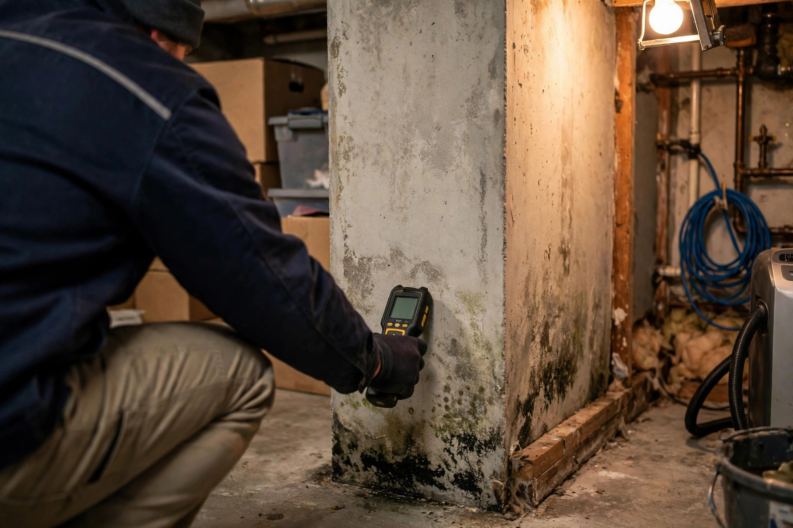
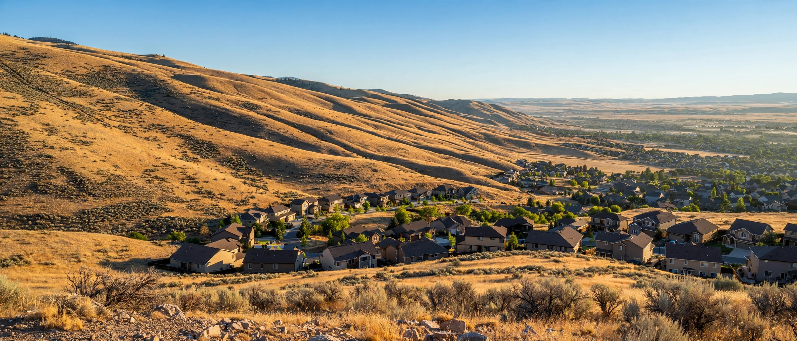
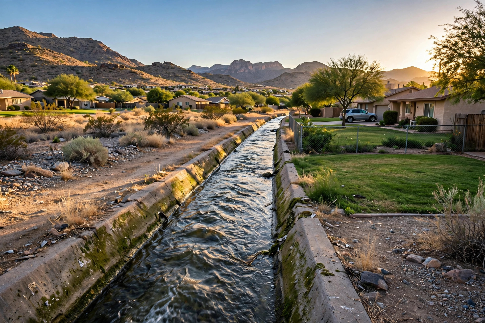

Mold or water damage in Boise? Get a straight answer today.
Whether you smell something musty in the crawlspace or there’s water on the floor right now, one call points you to the right next step: inspection, testing, cleanup or emergency extraction.


Eight common problems, eight clear fixes
Pick the one that matches what you're seeing. Each page explains causes, signs and what a typical project involves.

Mold Remediation
Containment, removal and clearance for active growth larger than a small patch — following the IICRC S520 approach.
See the process → MoldMold Inspection & Testing
A visual and moisture-meter walk-through, plus lab samples when you need numbers, not guesses.
Learn more → WaterEmergency Water Extraction
Standing water pulled out before it wicks into walls and subfloor.
Learn more → WaterFlooded Basement Cleanup
Pump-out, drying and salvage when a basement takes on water.
Learn more → MoldBasement Mold Removal
Groundwater and humidity-driven growth on below-grade walls.
Learn more → WaterCeiling Water Damage Repair
Stains, sagging and drips from roof leaks or upstairs plumbing.
Learn more → WaterWater Damaged Drywall Repair
Flood cuts, drying and rebuild after a leak or flood.
Learn more → MoldCloset Mold Removal
Growth behind stored items on cold exterior walls.
Learn more →A dry climate doesn’t mean a dry house
Boise gets roughly 11–12 inches of rain a year, so mold here usually isn’t a weather problem — it’s a water-in-the-wrong-place problem. Three local patterns cause most of it:
- Irrigation season (April–October). Canals and laterals raise shallow groundwater in parts of the valley, which shows up as damp basements and crawlspaces mid-summer.
- Freeze–thaw winters. Hard January cold snaps split supply lines in exterior walls and unheated garages.
- Tight, newer homes. Well-sealed builds with poor ventilation trap shower and cooking moisture in closets and corners.

What happens after you dial
Tell us what you see
A short conversation about where the water or growth is and how long it’s been there.
Get matched locally
You’re connected with a Treasure Valley provider for the service you actually need.
Free inspection scheduled
Someone looks in person before any work or price is agreed.
Across Ada & Canyon County
Also covering Star, ID and nearby unincorporated Ada County.
Water on the floor right now?
(321) 985-3339Open 24 hours, every day of the year. Turn off the water main if you can, then call.